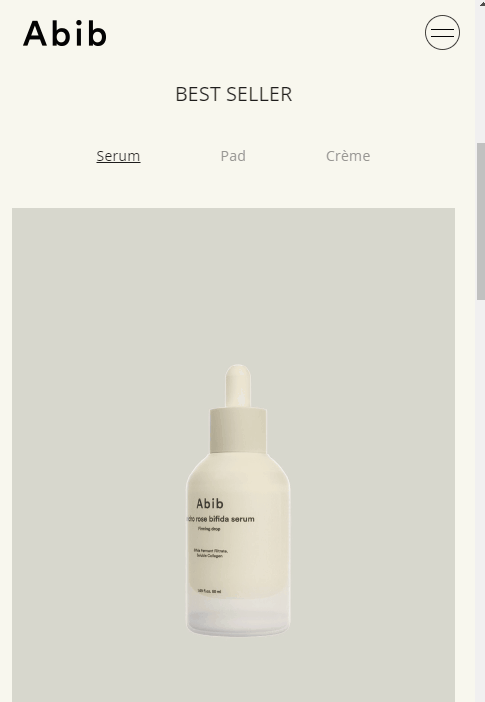
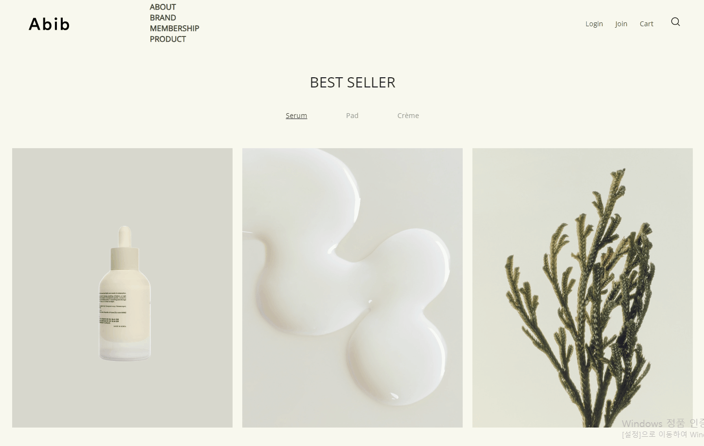
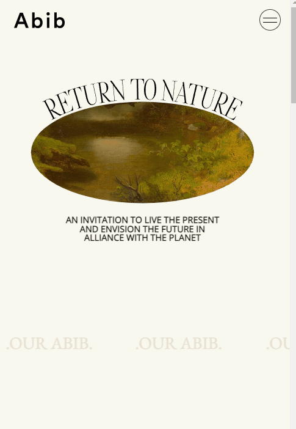
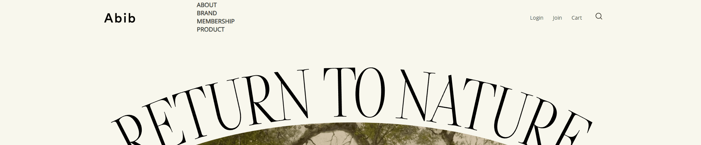
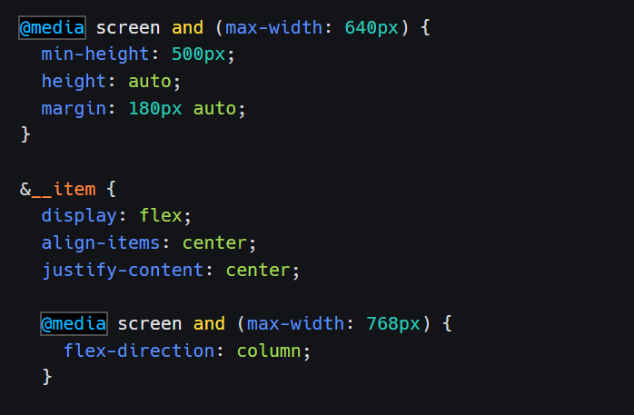
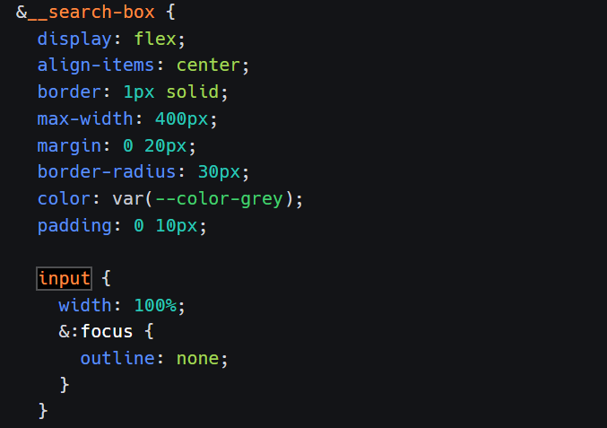

Go Home Work Detail ABIB 개편 직관적이고, 간결한 네비게이션 구조로 사용자가 원하는 정보를 쉽게 찾을 수 있도록 개편 개편 후 페이지 바로가기 기존 페이지 바로가기 js 함수의 활용  각 카테고리의 베스트 상품 정보를 제공합니다. 함수를 활용하여 제품 메뉴 클릭 시 해당 제품컷이 나오도록 설계하였습니다.  pc 사용자가 제품 메뉴 클릭 시 해당 제품의 제형과 원물을 파악할 수 있도록 설계하였습니다. Accodian, mega menu  기존 모바일 메뉴 페이지의 단순 나열 형식이 사용자의 편의성을 방해하여 수정이 필요하다고 생각했습니다. 아코디언 메뉴 형식으로 제작하여 모바일 기기에서의 사용 편의성을 높였습니다.  기존 메뉴 페이지의 어색한 공간 분배와 가독성이 떨어지는 단순 나열 형식을 개선하고자 하였습니다. 슬라이드 메가메뉴 형태는 유지하되,라인을 이용하여 카테고리 별로 섹션을 나누고 메뉴의 가독성을 높였습니다. swiper, scroll swiper 오픈 소스 페이지 바로가기 scroll 참고 페이지 바로가기 기존 페이지의 불필요한 배너는 최대한 제거하고, 스와이퍼를 사용하여 모바일 사용자의 편의를 고려한 간결한 디자인으로 변경하였습니다. pc 사용자를 고려하였을 때 버튼이 없는 기존 페이지의 스와이퍼 형식이 개선이 필요하다고 생각했습니다. 마우스 스크롤을 통해 사용자가 간편하게 신제품의 정보를 파악할 수 있도록 스크롤 트리거를 적용하였습니다. Media-Query, input 태그  미디어 쿼리를 이용한 반응형 작업을 진행하였습니다.  search box에 input 태그 적용하였습니다.